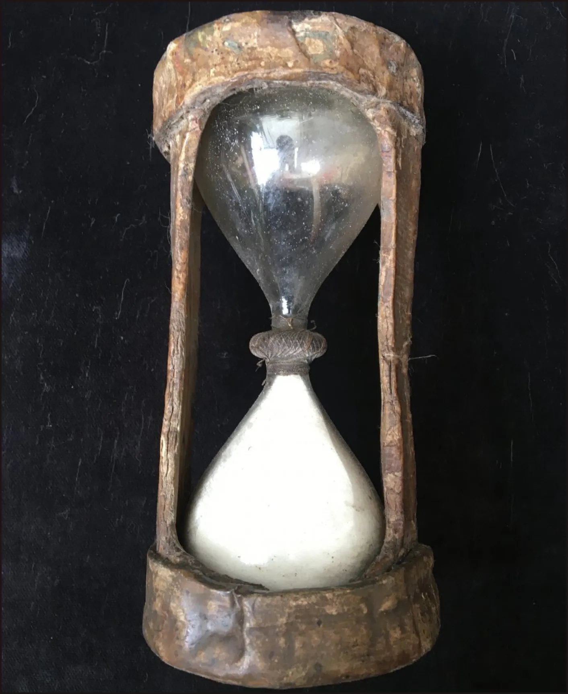
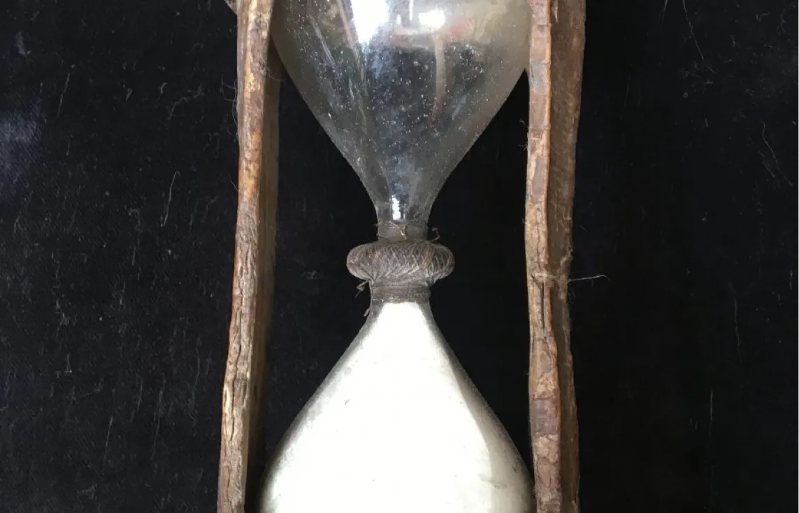
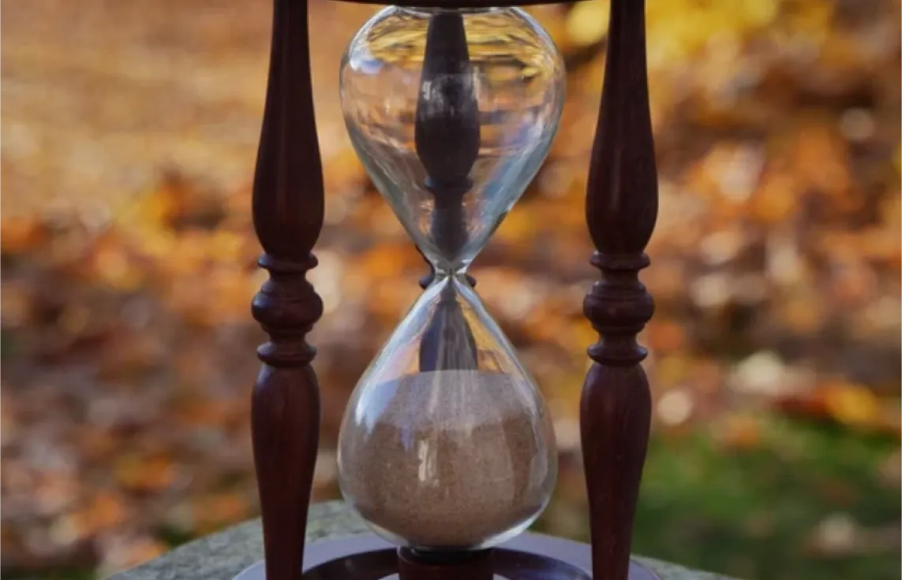

Published on 24/10 by Léo BAUDRY. Estimated reading time : 2 min
The hourglass: an ever-lasting tool
How to survive without our technological tools ?
The hourglass is one of the most fascinating objects invented by mankind to measure time. It is based on a very simple principle :
two glass containers are connected by a small passageway, allowing grains of sand to flow downwards in a predefined time.
Since its invention in Antiquity, this tool has left its mark on history as a precision instrument, used
not only to set the pace of the day, but also to improve one's lifestyle.
In a world where electronic clocks and connected watches are ever-present, we often forget the utility of this
technology-free tool.

Old hourglass
In a future where our current technologies disappear, the hourglass could once again come into its own.
At a time when time management relies almost exclusively on digital systems, the serious use of an
hourglass may seem pointless, but it offers a reliable solution for measuring time effectively.
Whether it's measuring cooking time, regulating a work cycle or even timing physical activities, the
hourglass needs no batteries or electricity. It is therefore one of the rare objects capable of
operating autonomously and requiring no complex maintenance.
Carousel of hourglass images


Hourglass examples.
The hourglass, by its very nature, imposes a slower, more conscious
reflection on time.
Unlike digital clocks that constantly flood us with precise information, the hourglass is an object that requires
a certain amount of patience.
The gently flowing grains of sand remind us that time is a precious resource that we cannot control.
This return to a more natural and direct approach of time management could encourage users to rediscover the importance of pauses and contemplation.
In a world theoretically devoid of electricity and modern technology, the hourglass would become much
more than a simple measuring tool.
It would represent a new way of thinking about time : slower, more
respectful of nature's rhythm, but also more autonomous.
In this way, it symbolises a form of resilience in the face of the
loss of the technologies on which we depend today..
A frieze of similar objects
Hourglass
To keep track of the passage of time and count the time spent working, to try to continue our sedentary lifestyles.
Bike
So that you can continue to move around efficiently and independently.
Silex knife
Really useful for hunting and obtaining food given that mass food production chains no longer exist.
Torch
Now a necessity for lighting up at night, while finding other, better solutions.
Clay bowls
A reminder of modern plates, these bowls will be an absolute necessity to maintain a minimum of hygiene during meals.
They'll also be useful for storing food and many other items.